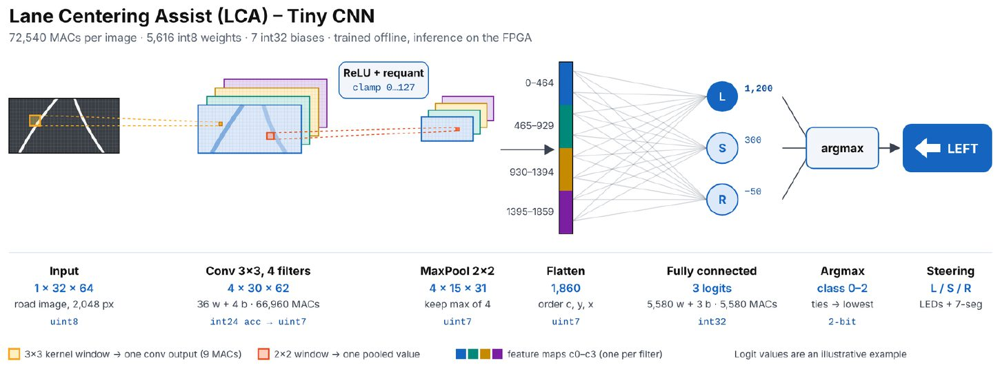

The project
The final project of the FPGA and semiconductor IC design training: design a hardware accelerator in Verilog and run it on a real board. Our team built a compact CNN on a Digilent Basys3 (AMD Artix-7). The network is trained offline in Python on the public TuSimple highway dataset; the FPGA runs inference only, with integer arithmetic and no processor.
I led the team and owned board integration: the scripted Vivado build flow, the constraints, the top-level design with the board's switches, LEDs and display, synthesis and timing runs, and bringing the design up on the board.
A proof of concept, not a production driver-assistance system.
The board classifies 16 stored test images selected with its switches; there is no live camera.

What I did
- Team lead. Split the work into five roles, ran a day-by-day plan against the course milestones, and kept a decision log, bug log and build log so the team shipped in 7 days.
- Build flow. Scripted the whole Vivado flow, from project creation to bitstream and board programming, so every build is reproducible and its timing and resource reports are archived.
- Board integration. Wrote the top-level design that connects the accelerator to the board: image selection with the switches, the result on the seven-segment display and LEDs, and an on-board latency readout.
- Bring-up and debugging. Brought each build up on the board and tracked down a build-configuration fault that made the board give the wrong answer on almost every image; the build script now checks for it.
- Version control and documentation. Ran the team's git workflow (one branch per task, merged by pull request) and wrote the build-and-run tutorial.
Result
- 83% accuracy on 2,216 test images the model never saw (target: 80%)
- Hardware output identical to the Python reference model: 128/128 images in simulation, 16/16 on the board
- 1.17 ms per image at 100 MHz, about 28× faster than a 30 fps camera needs
- Small footprint: 2.1% of the FPGA's logic and 25% of its block RAM